פשוט להצליח במתמטיקה › כל הנושאים › שאלון 471
4 יחידות – שאלון 471 (35471) – סרטוני הסבר לפי נושא
כל סרטוני ההסבר במתמטיקה לשאלון 471 – 510 סרטונים לפי הנושאים בתוכנית הלימודים: גאומטריה אנליטית, גאומטריה + טריגו + אנליטית, גאומטריה, דמיון משולשים ותאלס, מעגל, טריגונומטריה במישור, הסתברות, התפלגות נורמלית וסטטיסטיקה ועוד. מתאים לכיתות י׳–י״א ולהכנה לבגרות.
- גאומטריה אנליטית
- גאומטריה + טריגו + אנליטית
- גאומטריה
- דמיון משולשים ותאלס
- מעגל
- טריגונומטריה במישור
- הסתברות
- התפלגות נורמלית וסטטיסטיקה
- חדו״א – חקירת פונקציות
- בעיות קיצון
- אינטגרלים
- בעיות מילוליות ותנועה
- תרגול ושאלות בגרות מעורבות
📝 בחינות בגרות קודמות עם פתרונות: שאלון 35471 – כל המועדים
גאומטריה אנליטית (36) לכל הסרטונים בנושא ←
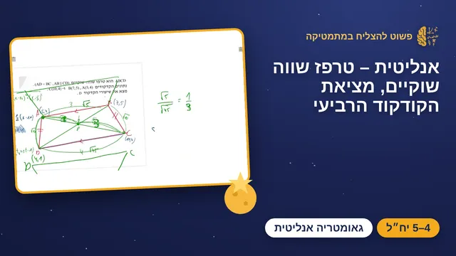
אנליטית – טרפז שווה שוקיים, מציאת הקודקוד הרביעי אנליטית – ישרים מאונכים, שיפוע ומרחק נקודה מישר
אנליטית – ישרים מאונכים, שיפוע ומרחק נקודה מישר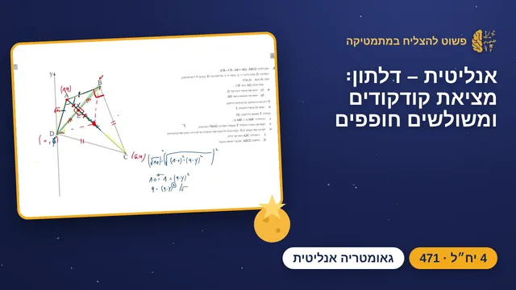
אנליטית – דלתון꞉ מציאת קודקודים ומשולשים חופפים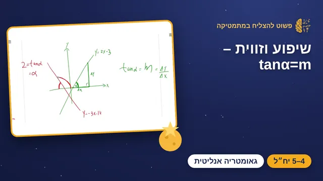
שיפוע וזווית – tanα=m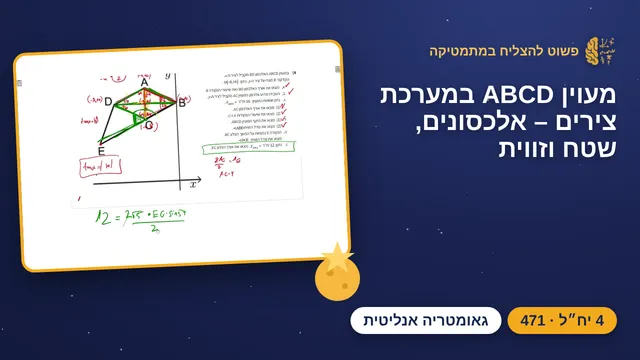
מעוין ABCD במערכת צירים – אלכסונים, שטח וזווית גאומטריה אנליטית – משולש ישר זווית ודמיון משולשים
גאומטריה אנליטית – משולש ישר זווית ודמיון משולשים בגרות חורף 2022 – גאומטריה אנליטית꞉ משולש ומקבילית
בגרות חורף 2022 – גאומטריה אנליטית꞉ משולש ומקבילית אנליטית – משולש שווה שוקיים, גובה ומרחק נקודה מישר
אנליטית – משולש שווה שוקיים, גובה ומרחק נקודה מישר אנליטית – מרובע ABCD, אלכסונים ומשוואות ישרים
אנליטית – מרובע ABCD, אלכסונים ומשוואות ישרים אנליטית – מלבן על שני ישרים מקבילים, מציאת קודקודים
אנליטית – מלבן על שני ישרים מקבילים, מציאת קודקודים מרובע במערכת צירים – שיפוע, משוואת ישר וחיתוך עם הצירים
מרובע במערכת צירים – שיפוע, משוואת ישר וחיתוך עם הצירים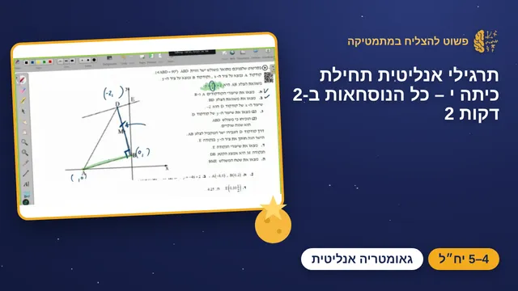
תרגילי אנליטית תחילת כיתה י – כל הנוסחאות ב-2 דקות 2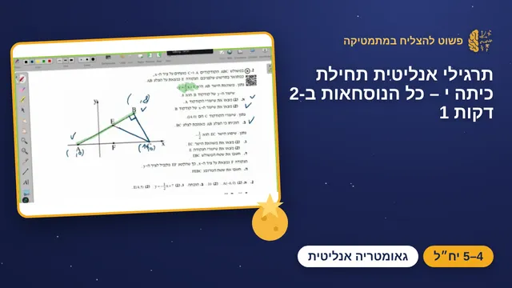
תרגילי אנליטית תחילת כיתה י – כל הנוסחאות ב-2 דקות 1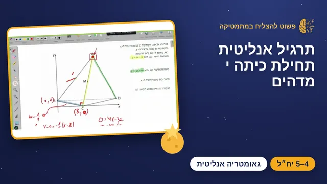
תרגיל אנליטית תחילת כיתה י מדהים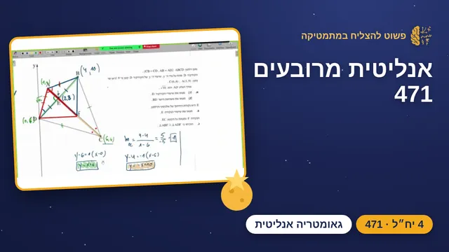
אנליטית מרובעים 471אנליטית עם גאומטריה 471 השאלון החדש – שאלה פשוטה וטובהגאומטריה אנליטית – נוסחאות, כלי העבודה ומשמעותםשאלת אנליטית ברמה גבוהה שמקיפה את כל החומר 481 יא 4 יח גאומטריה אנליטית בגרות חורף 2014 שאלה 2 4 יח 481
גאומטריה אנליטית בגרות חורף 2014 שאלה 2 4 יח 481 גאומטריה אנליטית 481 שאלת בגרות
גאומטריה אנליטית 481 שאלת בגרות גאומטריה אנליטית – פתרון 2 שאלות בגרות 481
גאומטריה אנליטית – פתרון 2 שאלות בגרות 481 אנליטית עם גאומטריה – שאלות עבודה פתורות 3אנליטית עם גאומטריה – שאלות עבודה פתורות 1
אנליטית עם גאומטריה – שאלות עבודה פתורות 3אנליטית עם גאומטריה – שאלות עבודה פתורות 1 אנליטית עם גאומטריה – שאלות עבודה פתורות 2כיתה י משולש שווה שוקיים ודלתון – גאומטריה עם אנליטית, תרגילים פתורים
אנליטית עם גאומטריה – שאלות עבודה פתורות 2כיתה י משולש שווה שוקיים ודלתון – גאומטריה עם אנליטית, תרגילים פתורים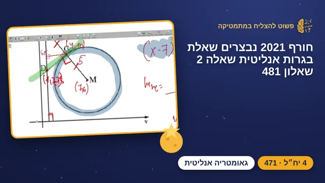
חורף 2021 נבצרים שאלת בגרות אנליטית שאלה 2 שאלון 481 גאומטריה אנליטית – הסבר כל החומר והנוסחאות 481 כולל הקשר לגאומטריהמשולש ישר זווית בגאומטריה אנליטית 471 כיתה י – שאלות פתורות
גאומטריה אנליטית – הסבר כל החומר והנוסחאות 481 כולל הקשר לגאומטריהמשולש ישר זווית בגאומטריה אנליטית 471 כיתה י – שאלות פתורות שטח משולש בגאומטריה אנליטית 471 כיתה י – שאלות פתורות
שטח משולש בגאומטריה אנליטית 471 כיתה י – שאלות פתורות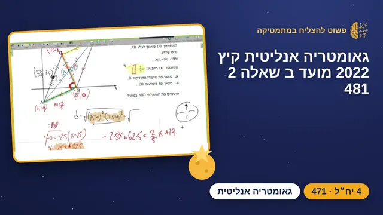
גאומטריה אנליטית קיץ 2022 מועד ב שאלה 2 481 גאומטריה אנליטית חורף 2023 שאלה 2 481
גאומטריה אנליטית חורף 2023 שאלה 2 481 תרגיל 28 עמ' 50 (יואל גבע) 471 כיתה י – אנליטית עם גאומטריה
תרגיל 28 עמ' 50 (יואל גבע) 471 כיתה י – אנליטית עם גאומטריה תרגיל 33 עמ' 43 (יואל גבע) 471 כיתה י – אנליטית עם גאומטריהגאומטריה עם אנליטית 471 כיתה י 4 יח
תרגיל 33 עמ' 43 (יואל גבע) 471 כיתה י – אנליטית עם גאומטריהגאומטריה עם אנליטית 471 כיתה י 4 יח פתרון שאלות אנליטית עם גאומטריה 481
פתרון שאלות אנליטית עם גאומטריה 481 גאומטריה אנליטית – נוסחאות ושאלות
גאומטריה אנליטית – נוסחאות ושאלותגאומטריה + טריגו + אנליטית (36) לכל הסרטונים בנושא ←
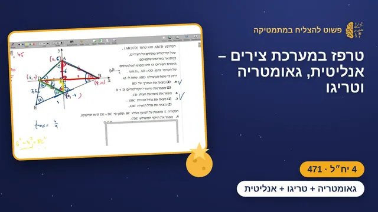
טרפז במערכת צירים – אנליטית, גאומטריה וטריגו גאומטריה – מרובעים עם אנליטית וטריגו שאלון 471 – מתכונת – חלק 2
גאומטריה – מרובעים עם אנליטית וטריגו שאלון 471 – מתכונת – חלק 2 גאומטריה – מרובעים עם אנליטית וטריגו שאלון 471 – מתכונת – חלק 1
גאומטריה – מרובעים עם אנליטית וטריגו שאלון 471 – מתכונת – חלק 1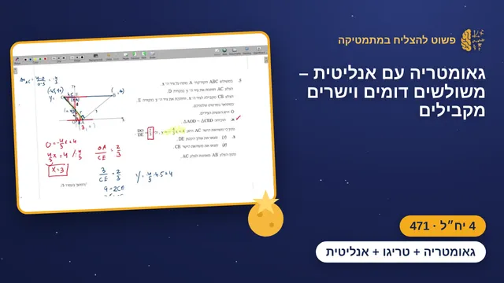
גאומטריה עם אנליטית – משולשים דומים וישרים מקבילים גאומטריה עם אנליטית – מרובע עם זוויות ישרות ודמיון משולשים
גאומטריה עם אנליטית – מרובע עם זוויות ישרות ודמיון משולשים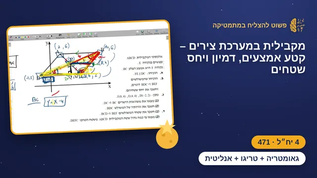
מקבילית במערכת צירים – קטע אמצעים, דמיון ויחס שטחים מקבילית OABC – דמיון משולשים ומציאת קודקודים
מקבילית OABC – דמיון משולשים ומציאת קודקודים מקבילית במערכת צירים – טריגו, שטחים ודמיון
מקבילית במערכת צירים – טריגו, שטחים ודמיון מעוין במערכת צירים – משולש שווה שוקיים ומעגל חוסם
מעוין במערכת צירים – משולש שווה שוקיים ומעגל חוסם אנליטית עם גאומטריה וטריגו – תרגילי הכנה לכיתה יא כולל משולש שווה שוקיים
אנליטית עם גאומטריה וטריגו – תרגילי הכנה לכיתה יא כולל משולש שווה שוקיים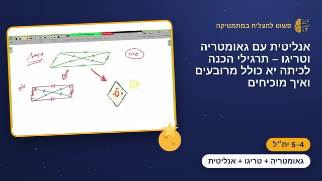
אנליטית עם גאומטריה וטריגו – תרגילי הכנה לכיתה יא כולל מרובעים ואיך מוכיחים גאומטריה מרובעים עם טריגו ואנליטית – מתכונת שאלון 471
גאומטריה מרובעים עם טריגו ואנליטית – מתכונת שאלון 471 גאומטריה עם טריגו ואנליטית שאלת בגרות 471 שאלון חדש 4 יח
גאומטריה עם טריגו ואנליטית שאלת בגרות 471 שאלון חדש 4 יח אנליטית עם גאומטריה וטריגו 471 שאלון חדש 4 יח
אנליטית עם גאומטריה וטריגו 471 שאלון חדש 4 יח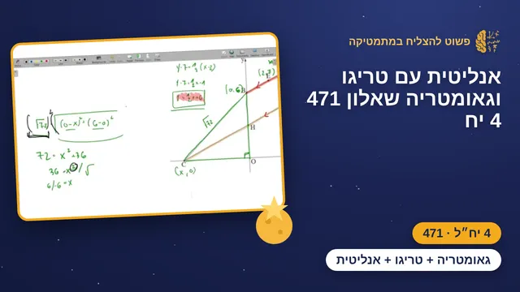
אנליטית עם טריגו וגאומטריה שאלון 471 4 יח שאלון 471 גאומטריה עם טריגונומטריה ואנליטית 4 יח שאלון חדש
שאלון 471 גאומטריה עם טריגונומטריה ואנליטית 4 יח שאלון חדש אנליטית עם טריגו 471 שאלון חדש 4 יח
אנליטית עם טריגו 471 שאלון חדש 4 יח שאלון 471 גאומטריה עם אנליטית וטריגונומטריה – משולש ישר זווית 4 יח
שאלון 471 גאומטריה עם אנליטית וטריגונומטריה – משולש ישר זווית 4 יח שאלה 4 בשאלון 471 גאומטריה עם אנליטית וטריגו – שאלה קשה במיוחד יא 4 יח
שאלה 4 בשאלון 471 גאומטריה עם אנליטית וטריגו – שאלה קשה במיוחד יא 4 יח הסבר על מהות שאלה 4 בשאלון 471 – חיבור גאומטריה עם טריגונומטריה ואנליטית
הסבר על מהות שאלה 4 בשאלון 471 – חיבור גאומטריה עם טריגונומטריה ואנליטית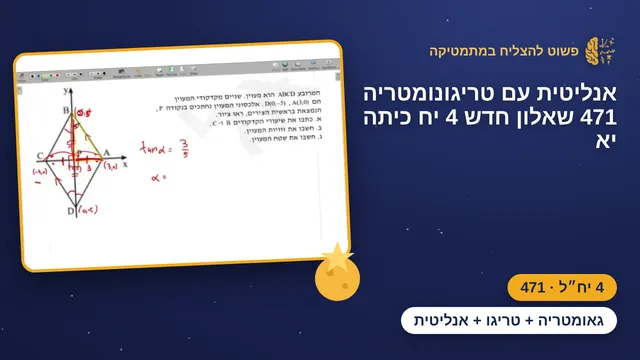
אנליטית עם טריגונומטריה 471 שאלון חדש 4 יח כיתה יא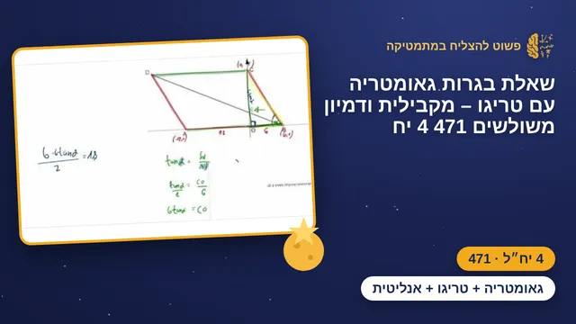
שאלת בגרות גאומטריה עם טריגו – מקבילית ודמיון משולשים 471 4 יח שאלון 471 גאומטריה עם טריגו ואנליטית – דלתון וחפיפת משולשיםשאלון 471 גאומטריה עם טריגו ואנליטית שאלת בגרות – כולל דמיון משולשים
שאלון 471 גאומטריה עם טריגו ואנליטית – דלתון וחפיפת משולשיםשאלון 471 גאומטריה עם טריגו ואנליטית שאלת בגרות – כולל דמיון משולשים שאלון 471 שאלה 4 – גאומטריה עם אנליטית וטריגו: ריבוע ודמיון משולשיםשאלת בגרות 471 – גאומטריה עם טריגו ואנליטית, שאלה 4471 שאלת גאומטריה עם טריגו ואנליטית כולל קטע אמצעים
שאלון 471 שאלה 4 – גאומטריה עם אנליטית וטריגו: ריבוע ודמיון משולשיםשאלת בגרות 471 – גאומטריה עם טריגו ואנליטית, שאלה 4471 שאלת גאומטריה עם טריגו ואנליטית כולל קטע אמצעים אנליטית עם גאומטריה וטריגו שאלון חדש 471 – תרגיל מסכם את כל החומראנליטית עם גאומטריה וטריגו שאלון 471 – שאלת בגרות פתורה מלאהגאומטריה עם טריגו ואנליטית 471 – רעיון ב-5 דקות 1
אנליטית עם גאומטריה וטריגו שאלון חדש 471 – תרגיל מסכם את כל החומראנליטית עם גאומטריה וטריגו שאלון 471 – שאלת בגרות פתורה מלאהגאומטריה עם טריגו ואנליטית 471 – רעיון ב-5 דקות 1 גאומטריה עם טריגו ואנליטית 471 – רעיון ב-5 דקות 2שאלות בגרות 471 אנליטית עם גאומטריה וטריגו – איך לפתור תרגיל 1
גאומטריה עם טריגו ואנליטית 471 – רעיון ב-5 דקות 2שאלות בגרות 471 אנליטית עם גאומטריה וטריגו – איך לפתור תרגיל 1 שאלות בגרות 471 אנליטית עם גאומטריה וטריגו – איך לפתור תרגיל 2
שאלות בגרות 471 אנליטית עם גאומטריה וטריגו – איך לפתור תרגיל 2 גאומטריה אנליטית עם טריגו וגאומטריה אוקלידית שאלת בגרות 471 חורף 2024אנליטית עם גאומטריה וטריגו שאלות בגרות 471 4 יח 1אנליטית עם גאומטריה וטריגו שאלות בגרות 471 4 יח 2
גאומטריה אנליטית עם טריגו וגאומטריה אוקלידית שאלת בגרות 471 חורף 2024אנליטית עם גאומטריה וטריגו שאלות בגרות 471 4 יח 1אנליטית עם גאומטריה וטריגו שאלות בגרות 471 4 יח 2גאומטריה (21) לכל הסרטונים בנושא ←
 קווים מיוחדים במשולש – חוצה זווית, תיכון, גובה וקטע אמצעים
קווים מיוחדים במשולש – חוצה זווית, תיכון, גובה וקטע אמצעים חזרה בגאומטריה – מקבילית, מלבן ומשולשים דומים
חזרה בגאומטריה – מקבילית, מלבן ומשולשים דומים מלבן ABCD – תיכונים במשולש וחישוב שטח
מלבן ABCD – תיכונים במשולש וחישוב שטח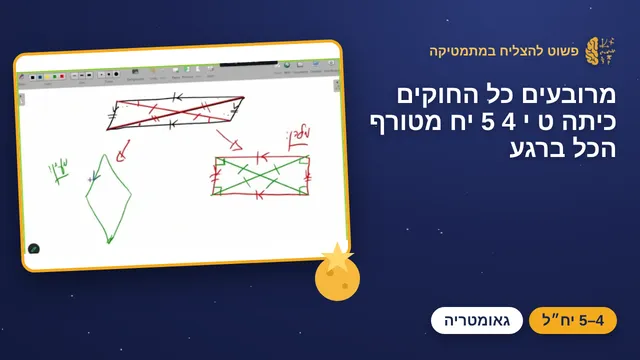
מרובעים כל החוקים כיתה ט י 4 5 יח מטורף הכל ברגע 30 60 90 משולש
30 60 90 משולש הסבר קטע אמצעים
הסבר קטע אמצעים גאומטריה עם כל משפחת הריבועים הסבר מדהים
גאומטריה עם כל משפחת הריבועים הסבר מדהים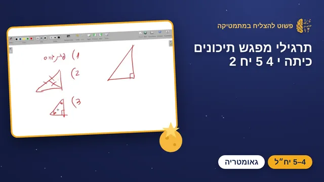
תרגילי מפגש תיכונים כיתה י 4 5 יח 2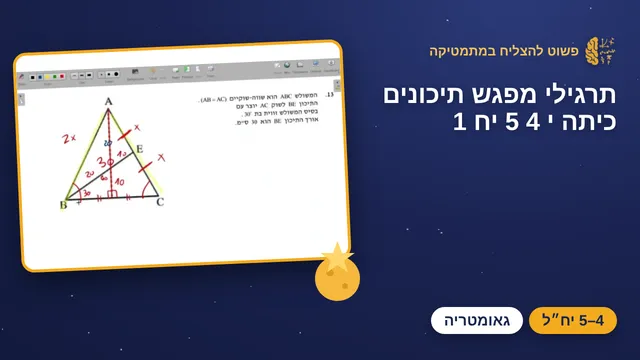
תרגילי מפגש תיכונים כיתה י 4 5 יח 1 תרגיל מדהים – ריבוע עם חפיפותתרגיל גאומטריה 4 יח
תרגיל מדהים – ריבוע עם חפיפותתרגיל גאומטריה 4 יח הסבר איך כותבים טענה-נימוק נכון
הסבר איך כותבים טענה-נימוק נכון גאומטריה משולבת כיתה יא 4 יח שאלות פצצה 3
גאומטריה משולבת כיתה יא 4 יח שאלות פצצה 3 גאומטריה משולבת כיתה יא 4 יח שאלות פצצה 4
גאומטריה משולבת כיתה יא 4 יח שאלות פצצה 4 גאומטריה משולבת כיתה יא 4 יח שאלות פצצה 2
גאומטריה משולבת כיתה יא 4 יח שאלות פצצה 2 גאומטריה משולבת כיתה יא 4 יח שאלות פצצה 1
גאומטריה משולבת כיתה יא 4 יח שאלות פצצה 1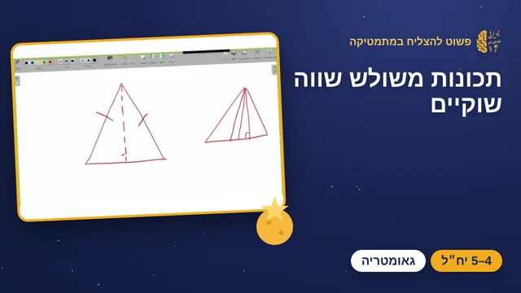
תכונות משולש שווה שוקיים משולש שווה שוקיים – תכונותשאלות גאומטריה ברמה גבוהה מאוד – מרובעים ומעגל
משולש שווה שוקיים – תכונותשאלות גאומטריה ברמה גבוהה מאוד – מרובעים ומעגל תכונות בגאומטריה – סיכום משולשים, מרובעים, חפיפה ודמיוןגאומטריה 481 – סיכום משולשים וחפיפות, מקבילית וקטע אמצעים
תכונות בגאומטריה – סיכום משולשים, מרובעים, חפיפה ודמיוןגאומטריה 481 – סיכום משולשים וחפיפות, מקבילית וקטע אמצעיםדמיון משולשים ותאלס (16) לכל הסרטונים בנושא ←
 דמיון משולשים עם שטחים
דמיון משולשים עם שטחים מלבן חסום במשולש – דמיון ויחס שטחים
מלבן חסום במשולש – דמיון ויחס שטחים מקבילית – יחסי קטעים ויחס שטחי משולשים
מקבילית – יחסי קטעים ויחס שטחי משולשים דמיון משולשים – גובה ליתר במשולש ישר זווית ומשולש שווה שוקיים
דמיון משולשים – גובה ליתר במשולש ישר זווית ומשולש שווה שוקיים משפטים במעגל ומשולשים דומים – הסבר
משפטים במעגל ומשולשים דומים – הסבר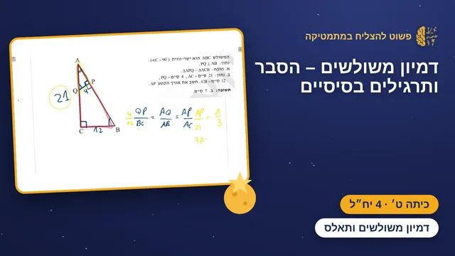
דמיון משולשים – הסבר ותרגילים בסיסיים מעוין עם ריבוע תרגיל מדהים 4 5 יח כיתה ט וי
מעוין עם ריבוע תרגיל מדהים 4 5 יח כיתה ט וי חוצה זוויות עם דמיון
חוצה זוויות עם דמיון דמיון עם שטחים
דמיון עם שטחים תאלס עם אותיות – רמה גבוהה
תאלס עם אותיות – רמה גבוהה תרגילי בסיס תאלס עם מספרים 2
תרגילי בסיס תאלס עם מספרים 2 תרגילי בסיס תאלס עם מספרים 1
תרגילי בסיס תאלס עם מספרים 1 משפט תאלס הסבר 4 5 יח
משפט תאלס הסבר 4 5 יח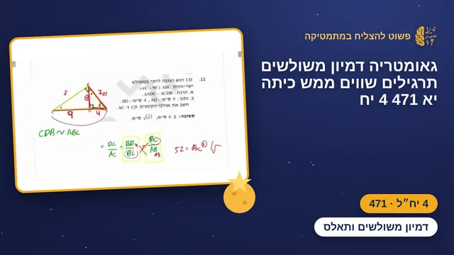
גאומטריה דמיון משולשים תרגילים שווים ממש כיתה יא 471 4 יח גאומטריה דמיון משולשים – הסבר, הבנה ותרגילים בסיסיים כיתה יא 471 4 יחדמיון משולשים – גאומטריה
גאומטריה דמיון משולשים – הסבר, הבנה ותרגילים בסיסיים כיתה יא 471 4 יחדמיון משולשים – גאומטריהמעגל (55) לכל הסרטונים בנושא ←
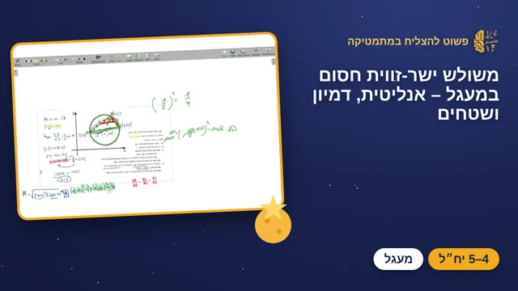
משולש ישר-זווית חסום במעגל – אנליטית, דמיון ושטחים מעגל ומשולש במערכת צירים – משיק, קוטר ודמיון
מעגל ומשולש במערכת צירים – משיק, קוטר ודמיון מעגל – משוואת מעגל, משיק ונקודות (שאלת בגרות 2021)
מעגל – משוואת מעגל, משיק ונקודות (שאלת בגרות 2021) מעגל – גאומטריה עם אנליטית וטריגו שאלון 471 – מתכונת
מעגל – גאומטריה עם אנליטית וטריגו שאלון 471 – מתכונת גאומטריה במעגל – משיק, קוטר ודמיון משולשים
גאומטריה במעגל – משיק, קוטר ודמיון משולשים מעגל ומשיק – דמיון משולשים ויחס שטחים
מעגל ומשיק – דמיון משולשים ויחס שטחים משיקים למעגל ממרובע – אנליטית ודמיון
משיקים למעגל ממרובע – אנליטית ודמיון מעגל דרך ראשית הצירים – משוואת מעגל, משיק ודמיון
מעגל דרך ראשית הצירים – משוואת מעגל, משיק ודמיון שאלות גאומטריה במעגל הבסיס של הבסיס 1
שאלות גאומטריה במעגל הבסיס של הבסיס 1 שאלות גאומטריה במעגל הבסיס של הבסיס 2תרגילי מעגל עם טריגו ואנליטית 4 יח 471 2
שאלות גאומטריה במעגל הבסיס של הבסיס 2תרגילי מעגל עם טריגו ואנליטית 4 יח 471 2 תרגילי מעגל עם טריגו ואנליטית 4 יח 471 3
תרגילי מעגל עם טריגו ואנליטית 4 יח 471 3 תרגילי מעגל עם טריגו ואנליטית 4 יח 471 1
תרגילי מעגל עם טריגו ואנליטית 4 יח 471 1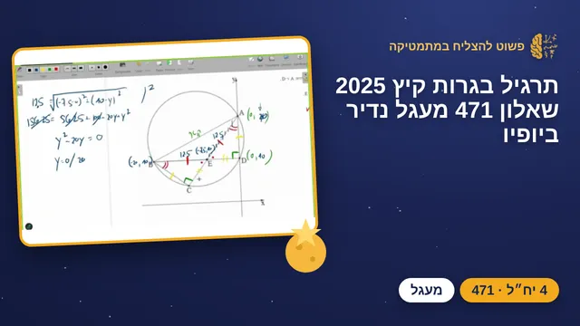
תרגיל בגרות קיץ 2025 שאלון 471 מעגל נדיר ביופיו משפטי מעגל – הבסיס המדהים 4 5 יח
משפטי מעגל – הבסיס המדהים 4 5 יח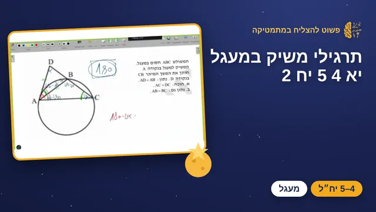
תרגילי משיק במעגל יא 4 5 יח 2 תרגילי משיק במעגל יא 4 5 יח 3
תרגילי משיק במעגל יא 4 5 יח 3 תרגילי משיק במעגל יא 4 5 יח 1
תרגילי משיק במעגל יא 4 5 יח 1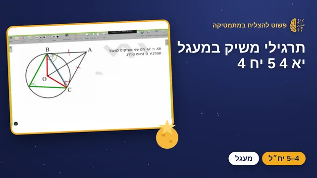
תרגילי משיק במעגל יא 4 5 יח 4גאומטריה מעגל עם טריגו ואנליטית – מתכונת שאלון 471 מעגל עם אנליטית וטריגו שאלת בגרות 471
מעגל עם אנליטית וטריגו שאלת בגרות 471 מעגל – שאלות מיוחדות ברמת בגרות 471 4 יח 2
מעגל – שאלות מיוחדות ברמת בגרות 471 4 יח 2 מעגל – שאלות מיוחדות ברמת בגרות 471 4 יח 3
מעגל – שאלות מיוחדות ברמת בגרות 471 4 יח 3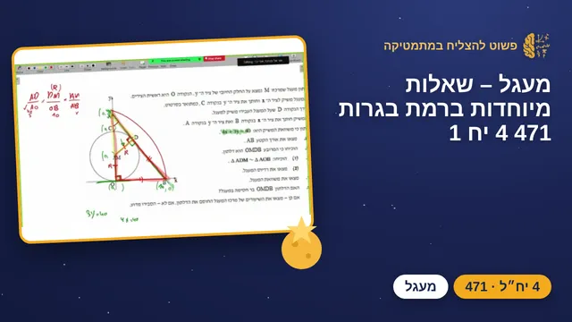
מעגל – שאלות מיוחדות ברמת בגרות 471 4 יח 1 מעגל – שאלות מיוחדות ברמת בגרות 471 4 יח 4
מעגל – שאלות מיוחדות ברמת בגרות 471 4 יח 4 מעגל עם אנליטית, טריגו ומשיקים 471 תרגיל טילתרגילי מעגל כולל אנליטית וטריגונומטריה עם משפטי מעגל 471 1
מעגל עם אנליטית, טריגו ומשיקים 471 תרגיל טילתרגילי מעגל כולל אנליטית וטריגונומטריה עם משפטי מעגל 471 1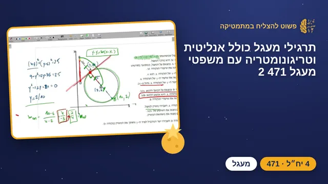
תרגילי מעגל כולל אנליטית וטריגונומטריה עם משפטי מעגל 471 2 תרגילי מעגל כולל אנליטית וטריגונומטריה עם משפטי מעגל 471 3
תרגילי מעגל כולל אנליטית וטריגונומטריה עם משפטי מעגל 471 3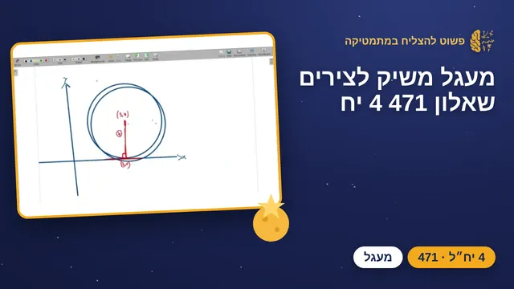
מעגל משיק לצירים שאלון 471 4 יח תרגיל מעגל כולל דמיון משולשים שאלון 471
תרגיל מעגל כולל דמיון משולשים שאלון 471 הסבר משוואת מעגל 471
הסבר משוואת מעגל 471 משפטים במעגל – יסודי ביותר, סרטון חובה
משפטים במעגל – יסודי ביותר, סרטון חובה מעגל – גאומטריה עם טריגו תרגילים פשוטים 2
מעגל – גאומטריה עם טריגו תרגילים פשוטים 2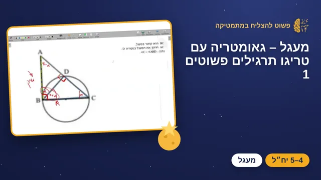
מעגל – גאומטריה עם טריגו תרגילים פשוטים 1 הסבר משוואת מעגל 471 (2)
הסבר משוואת מעגל 471 (2) מעגל – משוואת מעגל, גאומטריה וטריגו עם מעגל שאלון 471 6
מעגל – משוואת מעגל, גאומטריה וטריגו עם מעגל שאלון 471 6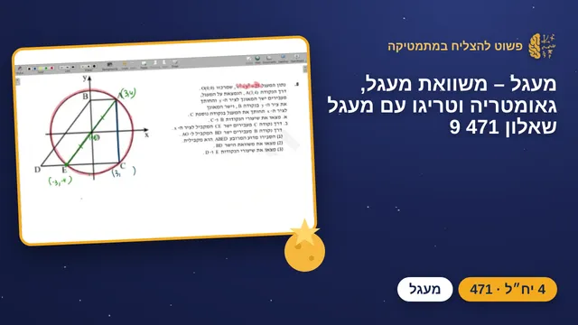
מעגל – משוואת מעגל, גאומטריה וטריגו עם מעגל שאלון 471 9 מעגל – משוואת מעגל, גאומטריה וטריגו עם מעגל שאלון 471 1
מעגל – משוואת מעגל, גאומטריה וטריגו עם מעגל שאלון 471 1 מעגל – משוואת מעגל, גאומטריה וטריגו עם מעגל שאלון 471 7
מעגל – משוואת מעגל, גאומטריה וטריגו עם מעגל שאלון 471 7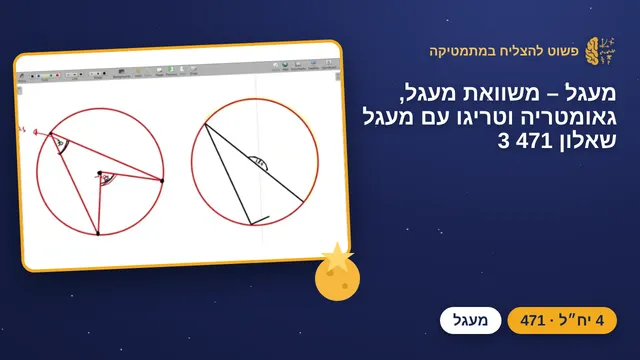
מעגל – משוואת מעגל, גאומטריה וטריגו עם מעגל שאלון 471 3 מעגל – משוואת מעגל, גאומטריה וטריגו עם מעגל שאלון 471 5
מעגל – משוואת מעגל, גאומטריה וטריגו עם מעגל שאלון 471 5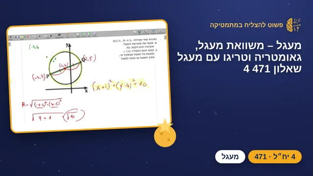
מעגל – משוואת מעגל, גאומטריה וטריגו עם מעגל שאלון 471 4 מעגל – משוואת מעגל, גאומטריה וטריגו עם מעגל שאלון 471 2
מעגל – משוואת מעגל, גאומטריה וטריגו עם מעגל שאלון 471 2 גאומטריה מעגל שאלת בגרות 4 5 יחגאומטריה מעגל עם דמיון משולשים – עצות איך להצליח בכל תרגיל
גאומטריה מעגל שאלת בגרות 4 5 יחגאומטריה מעגל עם דמיון משולשים – עצות איך להצליח בכל תרגיל גאומטריה – הסברים על מעגל ומשיקים, שאלה תותחיתמשפטי מעגל ל-4 יח 481טריגו ומעגל יא 4 יח 481 – שאלה שמסכמת את כל המעגל כולל משפטי מעגל
גאומטריה – הסברים על מעגל ומשיקים, שאלה תותחיתמשפטי מעגל ל-4 יח 481טריגו ומעגל יא 4 יח 481 – שאלה שמסכמת את כל המעגל כולל משפטי מעגל גאומטריה 4 יח עם מעגל 481 – שאלת בגרות לרציניים בלבד
גאומטריה 4 יח עם מעגל 481 – שאלת בגרות לרציניים בלבד טריגונומטריה ומעגל שאלת בגרות 481
טריגונומטריה ומעגל שאלת בגרות 481 תרגיל מעגל גאומטריה 4 5 יח כיתה י
תרגיל מעגל גאומטריה 4 5 יח כיתה י גאומטריה – תרגילים פתורים במעגל 481 581 2
גאומטריה – תרגילים פתורים במעגל 481 581 2 משפטי מעגל – הסברים 481 581
משפטי מעגל – הסברים 481 581 גאומטריה – תרגילים פתורים במעגל 481 581 1
גאומטריה – תרגילים פתורים במעגל 481 581 1טריגונומטריה במישור (26) לכל הסרטונים בנושא ←
 הסבר משולש ישר זווית ומשפט הסינוסים
הסבר משולש ישר זווית ומשפט הסינוסים תרגילים מדהימים של ישר זווית ומשפט הסינוסים 2
תרגילים מדהימים של ישר זווית ומשפט הסינוסים 2 תרגילים מדהימים של ישר זווית ומשפט הסינוסים 1
תרגילים מדהימים של ישר זווית ומשפט הסינוסים 1 תרגילים מדהימים של ישר זווית ומשפט הסינוסים 5
תרגילים מדהימים של ישר זווית ומשפט הסינוסים 5 תרגילים מדהימים של ישר זווית ומשפט הסינוסים 4
תרגילים מדהימים של ישר זווית ומשפט הסינוסים 4 תרגילים מדהימים של ישר זווית ומשפט הסינוסים 3
תרגילים מדהימים של ישר זווית ומשפט הסינוסים 3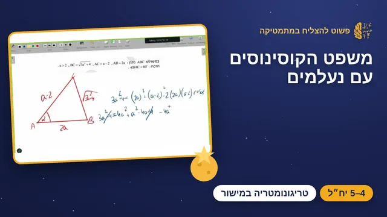
משפט הקוסינוסים עם נעלמים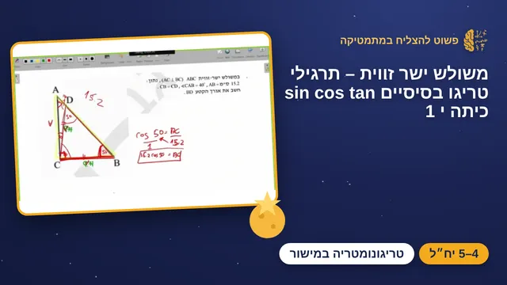
משולש ישר זווית – תרגילי טריגו בסיסיים sin cos tan כיתה י 1 משולש ישר זווית – תרגילי טריגו בסיסיים sin cos tan כיתה י 4
משולש ישר זווית – תרגילי טריגו בסיסיים sin cos tan כיתה י 4 משולש ישר זווית – תרגילי טריגו בסיסיים sin cos tan כיתה י 3
משולש ישר זווית – תרגילי טריגו בסיסיים sin cos tan כיתה י 3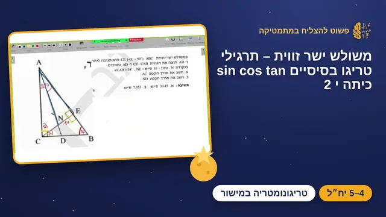
משולש ישר זווית – תרגילי טריגו בסיסיים sin cos tan כיתה י 2הסבר משפט הסינוסים והקוסינוסים טריגונומטריה – מציאת זווית ואורך צלעות, הבסיס ועצות
טריגונומטריה – מציאת זווית ואורך צלעות, הבסיס ועצות טריגונומטריה – איך למצוא זווית ואורך צלעות עם sin cos tanטריגונומטריה – איך משתמשים בסינוס, קוסינוס וטנגנס, שאלה פתורה
טריגונומטריה – איך למצוא זווית ואורך צלעות עם sin cos tanטריגונומטריה – איך משתמשים בסינוס, קוסינוס וטנגנס, שאלה פתורה טריגו – משפט הסינוסים, tan ושטח משולש: מתי משתמשים בכל משפט
טריגו – משפט הסינוסים, tan ושטח משולש: מתי משתמשים בכל משפט טריגו 481 – שאלת בגרות שמסכמת את כל החומר
טריגו 481 – שאלת בגרות שמסכמת את כל החומר סיכום משפטי טריגונומטריה – סינוסים, קוסינוסים ושטח משולש
סיכום משפטי טריגונומטריה – סינוסים, קוסינוסים ושטח משולש טריגו עם גאומטריה – משפט הסינוסים והקוסינוסים
טריגו עם גאומטריה – משפט הסינוסים והקוסינוסים טריגונומטריה – משפט הסינוסים ו-tan: מציאת זוויות וצלעות 481
טריגונומטריה – משפט הסינוסים ו-tan: מציאת זוויות וצלעות 481 שטח משולש – טריגונומטריה וגאומטריה 481
שטח משולש – טריגונומטריה וגאומטריה 481 משפט הסינוסים – טריגונומטריה
משפט הסינוסים – טריגונומטריה טריגונומטריה – משפט הסינוסים כיתה י
טריגונומטריה – משפט הסינוסים כיתה י טריגונומטריה – פתרון 2 שאלות בגרות 4812021 מועד א 481 – שאלה 5 טריגונומטריה, שאלת בגרות מלאה
טריגונומטריה – פתרון 2 שאלות בגרות 4812021 מועד א 481 – שאלה 5 טריגונומטריה, שאלת בגרות מלאה טריגו סיכום כיתה י
טריגו סיכום כיתה יהסתברות (65) לכל הסרטונים בנושא ←
 הסתברות – כפתורים בקופסה, דנה ורותי (עץ ומותנה)
הסתברות – כפתורים בקופסה, דנה ורותי (עץ ומותנה)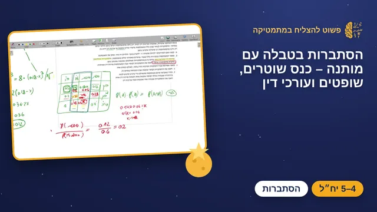
הסתברות בטבלה עם מותנה – כנס שוטרים, שופטים ועורכי דין הסתברות מותנית בטבלה – סקר הפסקת צהריים (שנה א׳ ושנה ב׳)
הסתברות מותנית בטבלה – סקר הפסקת צהריים (שנה א׳ ושנה ב׳) הסתברות עץ – פירות משתי מגירות והסתברות מותנית
הסתברות עץ – פירות משתי מגירות והסתברות מותנית הסתברות בטבלה עם מותנה 4-5 יח – תרגיל
הסתברות בטבלה עם מותנה 4-5 יח – תרגיל הסתברות שאלון 471 – מתכונת
הסתברות שאלון 471 – מתכונת הסתברות עץ 4-5 יח בסיסי – חלק 2
הסתברות עץ 4-5 יח בסיסי – חלק 2 הסתברות מותנית בטבלה 4-5 יח – מבחנים
הסתברות מותנית בטבלה 4-5 יח – מבחנים הסתברות בטבלה דו-ממדית – רישיון נהיגה בשכבה
הסתברות בטבלה דו-ממדית – רישיון נהיגה בשכבה הסתברות בטבלה – מנוי לנטפליקס בשכבה
הסתברות בטבלה – מנוי לנטפליקס בשכבה הסתברות בטבלה – מתנדבים בשכבות י״א-י״ב
הסתברות בטבלה – מתנדבים בשכבות י״א-י״ב הסתברות בטבלה – דירה ומכונית, מבחנים באוניברסיטה
הסתברות בטבלה – דירה ומכונית, מבחנים באוניברסיטה הסתברות בטבלה – דירות בבניין, כיוון ומשופצות
הסתברות בטבלה – דירות בבניין, כיוון ומשופצות הסתברות בסיסית – בחירה אקראית, קובייה ובולים במעטפה
הסתברות בסיסית – בחירה אקראית, קובייה ובולים במעטפה הסתברות – עץ꞉ הטלת קובייה פעמיים וקובייה צבעונית
הסתברות – עץ꞉ הטלת קובייה פעמיים וקובייה צבעונית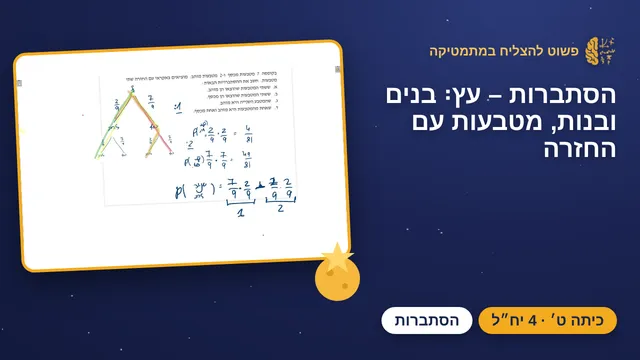
הסתברות – עץ꞉ בנים ובנות, מטבעות עם החזרה הסתברות – מרחב מדגם꞉ מטבע וסביבון
הסתברות – מרחב מדגם꞉ מטבע וסביבון הסתברות עץ וואו 471
הסתברות עץ וואו 471 הסתברות – מתכונת שאלון 471
הסתברות – מתכונת שאלון 471 שאלות בגרות בהסתברות שאלון 471 4 יח 1
שאלות בגרות בהסתברות שאלון 471 4 יח 1 שאלות בגרות בהסתברות שאלון 471 4 יח 2
שאלות בגרות בהסתברות שאלון 471 4 יח 2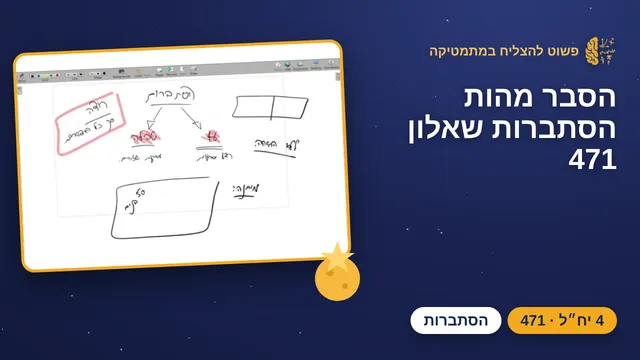
הסבר מהות הסתברות שאלון 471הסתברות שאלת בגרות 471 – חלום של שאלה הסתברות שאלות ברמה גבוהה 471 4 יח 1
הסתברות שאלות ברמה גבוהה 471 4 יח 1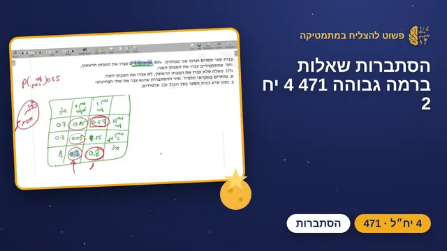
הסתברות שאלות ברמה גבוהה 471 4 יח 2 שאלת בגרות הסתברות שאלון 471 4 יחטבלה עם עץ הסתברות – שאלה טילית שאלון 471
שאלת בגרות הסתברות שאלון 471 4 יחטבלה עם עץ הסתברות – שאלה טילית שאלון 471 הסתברות טבלה עם מותנה – רמה גבוהה ביותר 471
הסתברות טבלה עם מותנה – רמה גבוהה ביותר 471 הסתברות טבלה עם מותנה – תרגילים לדוגמה 471 3
הסתברות טבלה עם מותנה – תרגילים לדוגמה 471 3 הסתברות טבלה עם מותנה – תרגילים לדוגמה 471 2
הסתברות טבלה עם מותנה – תרגילים לדוגמה 471 2 הסתברות – מהות, משמעות והסבר
הסתברות – מהות, משמעות והסבר הסתברות טבלה עם מותנה – תרגילים לדוגמה 471 1
הסתברות טבלה עם מותנה – תרגילים לדוגמה 471 1 הסתברות מותנית – תרגילים לדוגמה עץ 2
הסתברות מותנית – תרגילים לדוגמה עץ 2 הסתברות מותנית – תרגילים לדוגמה עץ 3
הסתברות מותנית – תרגילים לדוגמה עץ 3 הסתברות מותנית – תרגילים לדוגמה עץ 1
הסתברות מותנית – תרגילים לדוגמה עץ 1 הסתברות מותנית דיאגרמת עץ – הסבר ודוגמההסתברות עץ עם נעלם וללא החזרה 471 4 יח
הסתברות מותנית דיאגרמת עץ – הסבר ודוגמההסתברות עץ עם נעלם וללא החזרה 471 4 יח הסתברות עץ עם נעלם שאלון 471 4 יח
הסתברות עץ עם נעלם שאלון 471 4 יח הסתברות שאלה עם נעלם – תרגיל עץ פשוט ונהדר 4 יח
הסתברות שאלה עם נעלם – תרגיל עץ פשוט ונהדר 4 יח הסתברות דיאגרמת עץ – שאלה מדהימה 4 יח שאלון 471
הסתברות דיאגרמת עץ – שאלה מדהימה 4 יח שאלון 471 הקונספט של נעלם בהסתברות שאלון 471
הקונספט של נעלם בהסתברות שאלון 471 הסתברות עץ עם נעלמים – תרגיל מסכם שאלון 471 4 יח
הסתברות עץ עם נעלמים – תרגיל מסכם שאלון 471 4 יח עוד תרגיל הסתברות ללא החזרה שאלון 471
עוד תרגיל הסתברות ללא החזרה שאלון 471 הסתברות עץ ללא החזרה – הבנה טובה של הרעיון שאלון 471 4 יח
הסתברות עץ ללא החזרה – הבנה טובה של הרעיון שאלון 471 4 יח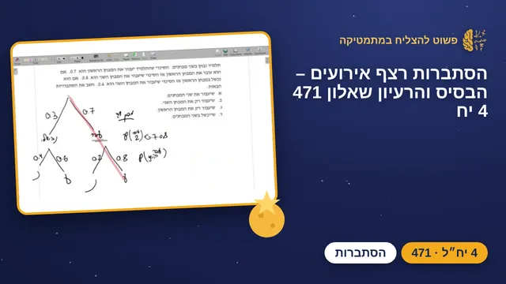
הסתברות רצף אירועים – הבסיס והרעיון שאלון 471 4 יח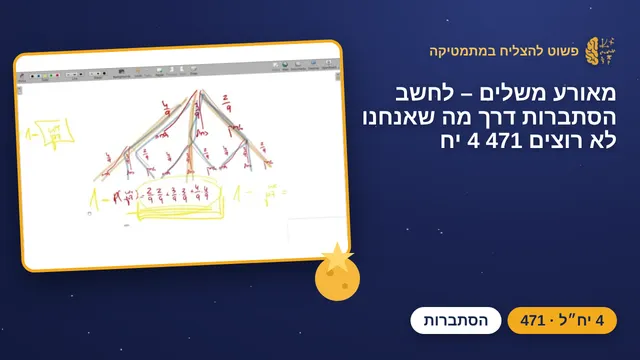
מאורע משלים – לחשב הסתברות דרך מה שאנחנו לא רוצים 471 4 יח הסתברות דיאגרמת עץ תרגיל חביב ביותר 471 יא 4 יח
הסתברות דיאגרמת עץ תרגיל חביב ביותר 471 יא 4 יח הסתברות דיאגרמת עץ – השתלשלות אירועים כיתה יא 471 4 יח
הסתברות דיאגרמת עץ – השתלשלות אירועים כיתה יא 471 4 יח הסתברות מרחב מדגם – ההיגיון שבהיגיון כיתה יא 471 4 יח
הסתברות מרחב מדגם – ההיגיון שבהיגיון כיתה יא 471 4 יח הסתברות – מהות ומשמעות כולל תרגילי התחלה כיתה יא 471 4 יח
הסתברות – מהות ומשמעות כולל תרגילי התחלה כיתה יא 471 4 יח שאלת הסתברות ברמה גבוהה שמקיפה את כל החומר 481 יא 4 יחהסתברות שאלת בגרות 4 יח 481
שאלת הסתברות ברמה גבוהה שמקיפה את כל החומר 481 יא 4 יחהסתברות שאלת בגרות 4 יח 481 הסתברות שאלת בגרות 481
הסתברות שאלת בגרות 481 הסתברות עץ וטבלה – שאלות בגרות וחזרה על כל החומרשאלת בגרות הסתברות 4 יח 481
הסתברות עץ וטבלה – שאלות בגרות וחזרה על כל החומרשאלת בגרות הסתברות 4 יח 481 חורף 2022 נבצרים מועד א – הסתברות שאלה 3 שאלון 481חורף 2021 מועד א – הסתברות שאלה 3 שאלון 481קיץ 2021 מועד א – הסתברות שאלה 3 שאלון 481
חורף 2022 נבצרים מועד א – הסתברות שאלה 3 שאלון 481חורף 2021 מועד א – הסתברות שאלה 3 שאלון 481קיץ 2021 מועד א – הסתברות שאלה 3 שאלון 481 הסתברות טבלה – פתרון שאלות והסברים חלק אהסתברות טבלה – פתרון שאלות והסברים חלק ב כולל מותנה
הסתברות טבלה – פתרון שאלות והסברים חלק אהסתברות טבלה – פתרון שאלות והסברים חלק ב כולל מותנה הסתברות טבלה – פתרון שאלות והסברים חלק ג כולל מותנה עם נעלמים
הסתברות טבלה – פתרון שאלות והסברים חלק ג כולל מותנה עם נעלמים 2023 מועד ב – הסתברות שאלה 3 481
2023 מועד ב – הסתברות שאלה 3 481 קיץ 2022 מועד ב – הסתברות טבלה שאלה 3
קיץ 2022 מועד ב – הסתברות טבלה שאלה 3 הסתברות עץ וטבלה כולל מותנה ושאלות בגרות – הסבר כל החומרהסתברות עץ עם נעלמים ומותנה 481 כיתה יא
הסתברות עץ וטבלה כולל מותנה ושאלות בגרות – הסבר כל החומרהסתברות עץ עם נעלמים ומותנה 481 כיתה יאהתפלגות נורמלית וסטטיסטיקה (26) לכל הסרטונים בנושא ←
 רגרסיה לינארית שאלון 471 – מתכונת
רגרסיה לינארית שאלון 471 – מתכונת התפלגות נורמלית שאלון 471 – מתכונת
התפלגות נורמלית שאלון 471 – מתכונת התפלגות נורמלית – אורך גבעולי פרחים, אחוזים ופרמטרים
התפלגות נורמלית – אורך גבעולי פרחים, אחוזים ופרמטרים התפלגות נורמלית – אורך חיי טלפונים סלולריים
התפלגות נורמלית – אורך חיי טלפונים סלולריים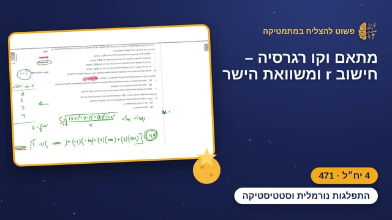
מתאם וקו רגרסיה – חישוב r ומשוואת הישר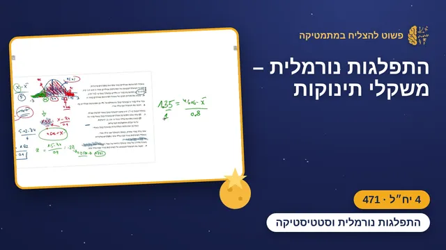
התפלגות נורמלית – משקלי תינוקות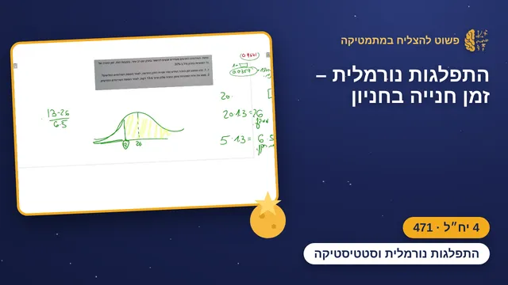
התפלגות נורמלית – זמן חנייה בחניון התפלגות נורמלית – זמן הגעה לעבודה, מציאת סטיית תקן
התפלגות נורמלית – זמן הגעה לעבודה, מציאת סטיית תקן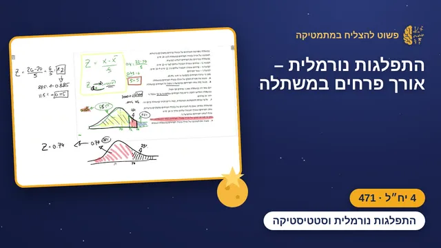
התפלגות נורמלית – אורך פרחים במשתלה התפלגות נורמלית – ציוני בגרות ופסיכומטרי השוואת גרפים
התפלגות נורמלית – ציוני בגרות ופסיכומטרי השוואת גרפים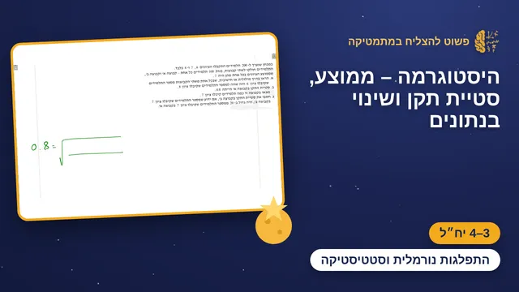
היסטוגרמה – ממוצע, סטיית תקן ושינוי בנתונים התפלגות 471 מדהים ומרגש
התפלגות 471 מדהים ומרגש רגרסיה 471
רגרסיה 471 התפלגות נורמלית – הסבר של כל החומר בשתי דקות וחצי
התפלגות נורמלית – הסבר של כל החומר בשתי דקות וחצי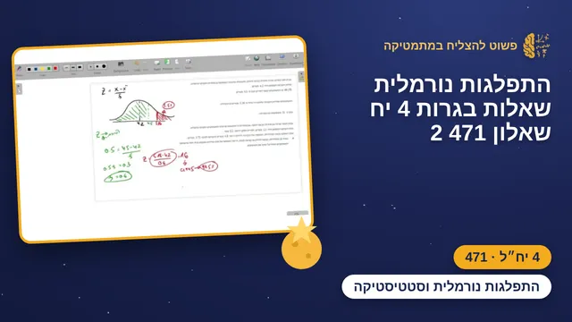
התפלגות נורמלית שאלות בגרות 4 יח שאלון 471 2 התפלגות נורמלית – מתכונת שאלון 471
התפלגות נורמלית – מתכונת שאלון 471 רגרסיה לינארית – מתכונת שאלון 471
רגרסיה לינארית – מתכונת שאלון 471 התפלגות נורמלית 3
התפלגות נורמלית 3 התפלגות נורמלית
התפלגות נורמלית התפלגות נורמלית 2
התפלגות נורמלית 2 התפלגות נורמלית 4
התפלגות נורמלית 4 התפלגות נורמלית – בסיס הרעיון והסבר הנוסחה שאלון 471 1
התפלגות נורמלית – בסיס הרעיון והסבר הנוסחה שאלון 471 1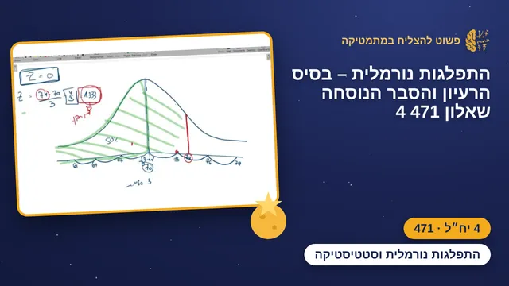
התפלגות נורמלית – בסיס הרעיון והסבר הנוסחה שאלון 471 4 התפלגות נורמלית – בסיס הרעיון והסבר הנוסחה שאלון 471 2
התפלגות נורמלית – בסיס הרעיון והסבר הנוסחה שאלון 471 2 התפלגות נורמלית – בסיס הרעיון והסבר הנוסחה שאלון 471 3
התפלגות נורמלית – בסיס הרעיון והסבר הנוסחה שאלון 471 3 התפלגות נורמלית – בסיס הרעיון והסבר הנוסחה שאלון 471 5
התפלגות נורמלית – בסיס הרעיון והסבר הנוסחה שאלון 471 5חדו״א – חקירת פונקציות (163) לכל הסרטונים בנושא ←
 גרפי f′ ו-f″ – זיהוי, משיק, אינטגרל ופונקציה חדשהחקירת f(x)=2−2∕x² – משיק, אסימפטוטה ובעיית קיצון
גרפי f′ ו-f″ – זיהוי, משיק, אינטגרל ופונקציה חדשהחקירת f(x)=2−2∕x² – משיק, אסימפטוטה ובעיית קיצון חקירת f(x)=1+½x−√(2x+9) – פרמטר, תחום וקיצון
חקירת f(x)=1+½x−√(2x+9) – פרמטר, תחום וקיצון חקירת פונקציה רציונלית y=(ax+16)∕(x²−3x−4) – מציאת פרמטריםחקירת פונקציה רציונלית שאלון 471 – מתכונת
חקירת פונקציה רציונלית y=(ax+16)∕(x²−3x−4) – מציאת פרמטריםחקירת פונקציה רציונלית שאלון 471 – מתכונת חקירת פונקציית שורש שאלון 471 – מתכונתf(x)=2x³−9x²+12x−a – פרמטר, משיק ושטחחקירת פולינום f(x)=x³−3x+2 ושטחים
חקירת פונקציית שורש שאלון 471 – מתכונתf(x)=2x³−9x²+12x−a – פרמטר, משיק ושטחחקירת פולינום f(x)=x³−3x+2 ושטחים פולינום – האיבר המוביל והתנהגות באינסוף, זיהוי גרףחקירת f(x)=a∕(x²−4) – מציאת פרמטר משיפוע המשיק
פולינום – האיבר המוביל והתנהגות באינסוף, זיהוי גרףחקירת f(x)=a∕(x²−4) – מציאת פרמטר משיפוע המשיק חקירת f(x)=6x(√x−m) – המשך: גרף ושטח
חקירת f(x)=6x(√x−m) – המשך: גרף ושטח חקירת f(x)=1+½x−√(2x+b) – מציאת b ותחום הגדרהחקירת f(x)=√(5−2x)+bx ופונקציה קדומה
חקירת f(x)=1+½x−√(2x+b) – מציאת b ותחום הגדרהחקירת f(x)=√(5−2x)+bx ופונקציה קדומה חקירת f(x)=±x²√(5+x) – זיהוי גרף ופונקציית נגזרת
חקירת f(x)=±x²√(5+x) – זיהוי גרף ופונקציית נגזרת הקשר בין גרף הפונקציה לגרף הנגזרת
הקשר בין גרף הפונקציה לגרף הנגזרת חקירת f(x)=(x²−4x+5)∕(x−2) והפונקציה g(x)=│f(x)│
חקירת f(x)=(x²−4x+5)∕(x−2) והפונקציה g(x)=│f(x)│ חקירת f(x)=(2x²−2)∕(x²−4)+1 – אסימפטוטות וזיהוי גרפים
חקירת f(x)=(2x²−2)∕(x²−4)+1 – אסימפטוטות וזיהוי גרפים הקשר בין f, f′ ו-f″ – זיהוי גרפים
הקשר בין f, f′ ו-f″ – זיהוי גרפים חקירת פונקציה מורכבת fx=x²−kx³ עם פרמטר
חקירת פונקציה מורכבת fx=x²−kx³ עם פרמטר פונקציה זוגית ואי זוגית – הבנה וזיהויחקירת פולינום fx=3x⁴−2x³ – קיצון ותחומי עלייה וירידהחקירת פונקציה רציונלית עם פרמטר y=x−1∕x²−b²
פונקציה זוגית ואי זוגית – הבנה וזיהויחקירת פולינום fx=3x⁴−2x³ – קיצון ותחומי עלייה וירידהחקירת פונקציה רציונלית עם פרמטר y=x−1∕x²−b² חקירת פולינום fx=3x⁴−2x³ – פתיחה
חקירת פולינום fx=3x⁴−2x³ – פתיחה הזזות פונק אופקית ואנכית - 4-5 יח
הזזות פונק אופקית ואנכית - 4-5 יח הזזות פונק אופקית ואנכית - 4-5 יח
הזזות פונק אופקית ואנכית - 4-5 יח הזזות פונק אופקית ואנכית - 4-5 יחהזזות פונק אופקית ואנכית - 4-5 יחהזזות פונק אופקית ואנכית - 4-5 יח
הזזות פונק אופקית ואנכית - 4-5 יחהזזות פונק אופקית ואנכית - 4-5 יחהזזות פונק אופקית ואנכית - 4-5 יח הזזות פונק אופקית ואנכית - 4-5 יח
הזזות פונק אופקית ואנכית - 4-5 יח הזזות פונק אופקית ואנכית - 4-5 יח
הזזות פונק אופקית ואנכית - 4-5 יח הזזות פונק אופקית ואנכית - 4-5 יחפונק כללית שאלה מתוקה וחמודה
הזזות פונק אופקית ואנכית - 4-5 יחפונק כללית שאלה מתוקה וחמודה חקירת שבר 471
חקירת שבר 471 חקירת שבר בגרות 4 יח 471חקירת שורש בגרות 4 יח
חקירת שבר בגרות 4 יח 471חקירת שורש בגרות 4 יח תרגיל בגרות 4 יח חקירת שבר מטורפת
תרגיל בגרות 4 יח חקירת שבר מטורפת הסבר על כל סוגי הפונקציות שנלמד בכל התיכון
הסבר על כל סוגי הפונקציות שנלמד בכל התיכון משמעות של פונקציה ונגזרת – מותאם לכל היחידותחקירה מלאה פונקציית שורש 4 יח הטופ של הטופ
משמעות של פונקציה ונגזרת – מותאם לכל היחידותחקירה מלאה פונקציית שורש 4 יח הטופ של הטופ הסבר משמעות פונקציית שורש – איך גוזרים, תחום הגדרה ופתירת משוואות
הסבר משמעות פונקציית שורש – איך גוזרים, תחום הגדרה ופתירת משוואות הסבר פונקציה זוגית ואי-זוגיתמשמעות של פונקציה ונגזרת
הסבר פונקציה זוגית ואי-זוגיתמשמעות של פונקציה ונגזרת פונקציית שורש חקירה מלאה עם סעיפים חכמים
פונקציית שורש חקירה מלאה עם סעיפים חכמים למצוא אסימפטוטה אופקית בפונקציית שברחקירת שבר שאלות בגרות 471 4 יח 1חקירת שבר שאלות בגרות 471 4 יח 2
למצוא אסימפטוטה אופקית בפונקציית שברחקירת שבר שאלות בגרות 471 4 יח 1חקירת שבר שאלות בגרות 471 4 יח 2 חקירת שבר – מתכונת שאלון 471חקירת שורש – מתכונת שאלון 471
חקירת שבר – מתכונת שאלון 471חקירת שורש – מתכונת שאלון 471 פונקציה מורכבת – תרגיל התחלה
פונקציה מורכבת – תרגיל התחלה פונקציית שורש – תחום הגדרה, איך גוזרים ואיך פותרים משוואה
פונקציית שורש – תחום הגדרה, איך גוזרים ואיך פותרים משוואה פונקציית שורש שאלה מדהימה 471
פונקציית שורש שאלה מדהימה 471 פונקציית שורש שאלת בגרות 471
פונקציית שורש שאלת בגרות 471 פונקציית שורש שאלת בגרות 471 פצצה
פונקציית שורש שאלת בגרות 471 פצצה פונקציית שורש שאלת בגרות 471 2
פונקציית שורש שאלת בגרות 471 2 פונקציית שורש 471 שאלות בסיסיות ומסכמות 4 יח 4פונקציית שורש 471 שאלות בסיסיות ומסכמות 4 יח 3
פונקציית שורש 471 שאלות בסיסיות ומסכמות 4 יח 4פונקציית שורש 471 שאלות בסיסיות ומסכמות 4 יח 3 פונקציית שורש 471 שאלות בסיסיות ומסכמות 4 יח 2
פונקציית שורש 471 שאלות בסיסיות ומסכמות 4 יח 2 פונקציית שורש 471 שאלות בסיסיות ומסכמות 4 יח 1
פונקציית שורש 471 שאלות בסיסיות ומסכמות 4 יח 1 חקירת פונקציה רציונלית (שבר) שאלת בגרות 471
חקירת פונקציה רציונלית (שבר) שאלת בגרות 471 חקירת שבר עם סעיפים חכמים שאלון 471 4 יח 1
חקירת שבר עם סעיפים חכמים שאלון 471 4 יח 1 חקירת שבר עם סעיפים חכמים שאלון 471 4 יח 3חקירת שבר עם סעיפים חכמים שאלון 471 4 יח 2
חקירת שבר עם סעיפים חכמים שאלון 471 4 יח 3חקירת שבר עם סעיפים חכמים שאלון 471 4 יח 2 חקירת פונקציה שאלון 471 שאלת בגרות כולל סעיפים חכמים
חקירת פונקציה שאלון 471 שאלת בגרות כולל סעיפים חכמים סעיף חכם – דיפרנציאלי 4 יח 471איך מוצאים פרמטר מנתון קשר פונקציה-נגזרת שאלון 471
סעיף חכם – דיפרנציאלי 4 יח 471איך מוצאים פרמטר מנתון קשר פונקציה-נגזרת שאלון 471 חקירת פונקציית שבר רציונלית שאלון 471 – מההתחלה עד הסוף כולל אסימפטוטות
חקירת פונקציית שבר רציונלית שאלון 471 – מההתחלה עד הסוף כולל אסימפטוטות הסבר משמעות פונקציה ונגזרת – הבסיס של הבסיס שאלון 471חקירת שבר עם סעיפים חכמים, הזזות וקשר פונקציה-נגזרת שאלון 471 1חקירת שבר עם סעיפים חכמים, הזזות וקשר פונקציה-נגזרת שאלון 471 2חקירת שורש – הסבר של כל החומר יא 4 יח
הסבר משמעות פונקציה ונגזרת – הבסיס של הבסיס שאלון 471חקירת שבר עם סעיפים חכמים, הזזות וקשר פונקציה-נגזרת שאלון 471 1חקירת שבר עם סעיפים חכמים, הזזות וקשר פונקציה-נגזרת שאלון 471 2חקירת שורש – הסבר של כל החומר יא 4 יח חקירת פונקציית שורש מלאה ועוד סעיפים חכמים 4 יח
חקירת פונקציית שורש מלאה ועוד סעיפים חכמים 4 יח פונקציית שבר עם פרמטר כולל סעיפים חכמים 471 4 יחאסימפטוטה אופקית – הסבר נדיר ביותר 471סעיף חכם 1 – לחלק לפונקציה: מה קורה לפונקציה 4 5 יח
פונקציית שבר עם פרמטר כולל סעיפים חכמים 471 4 יחאסימפטוטה אופקית – הסבר נדיר ביותר 471סעיף חכם 1 – לחלק לפונקציה: מה קורה לפונקציה 4 5 יח חקירת שבר רציונלית שאלון 471 – חקירה מלאה 4 יח
חקירת שבר רציונלית שאלון 471 – חקירה מלאה 4 יח חקירת שבר רציונלית עם פרמטר שאלון 471 4 יחקשר בין פונקציה לנגזרת עם פונקציית שבר – הבנה עמוקה 4 5 יח
חקירת שבר רציונלית עם פרמטר שאלון 471 4 יחקשר בין פונקציה לנגזרת עם פונקציית שבר – הבנה עמוקה 4 5 יח פונקציית שבר רציונלית – חקירה מלאה עם מציאת נעלם
פונקציית שבר רציונלית – חקירה מלאה עם מציאת נעלם חקירה מלאה של פונקציה רציונלית (מנה) שאלון 471 571 – מהבסיס עד הסוףסעיפי חשיבה בפונקציה והזזותחקירת פונקציית פולינום – חקירה מלאה כולל סעיפים מיוחדיםאיך פותרים משוואות פולינום ומורכבת – הכי פשוט בעולם
חקירה מלאה של פונקציה רציונלית (מנה) שאלון 471 571 – מהבסיס עד הסוףסעיפי חשיבה בפונקציה והזזותחקירת פונקציית פולינום – חקירה מלאה כולל סעיפים מיוחדיםאיך פותרים משוואות פולינום ומורכבת – הכי פשוט בעולם פונקציה – מה אנחנו הולכים לעשות איתה ומה אנחנו רוצים ממנה
פונקציה – מה אנחנו הולכים לעשות איתה ומה אנחנו רוצים ממנה משמעות של פונקציה ונגזרת – כל התורה על רגל אחתהסיפור של הנגזרת – משמעות ואיך גוזרים פולינום ומורכבת
משמעות של פונקציה ונגזרת – כל התורה על רגל אחתהסיפור של הנגזרת – משמעות ואיך גוזרים פולינום ומורכבת חקירת פונקציה רציונלית – הסבר על אסימפטוטות אנכית ואופקיתהסבר קשר בין פונקציה לנגזרת ולנגזרת שנייה
חקירת פונקציה רציונלית – הסבר על אסימפטוטות אנכית ואופקיתהסבר קשר בין פונקציה לנגזרת ולנגזרת שנייה חקירת שורש – פונקציית מכפלה, תרגיל בסיסי וטוב 4 5 יח
חקירת שורש – פונקציית מכפלה, תרגיל בסיסי וטוב 4 5 יח פונקציית פולינום עם משיקים – שאלה בסיסית וטובה 3 4 5 יח
פונקציית פולינום עם משיקים – שאלה בסיסית וטובה 3 4 5 יח חקירת שבר עם סעיפים חכמים – שאלה פצצה 471 571
חקירת שבר עם סעיפים חכמים – שאלה פצצה 471 571 חקירת שורש עם נעלם וחקירה מלאה עם סעיפים חכמים 471 571
חקירת שורש עם נעלם וחקירה מלאה עם סעיפים חכמים 471 571 חקירת פולינום עם מציאת נעלם וסעיף מחשבה כיתה י 471 4 יח
חקירת פולינום עם מציאת נעלם וסעיף מחשבה כיתה י 471 4 יח חקירת פולינום עם הבנה ומחשבה – לפתוח תודעה 471
חקירת פולינום עם הבנה ומחשבה – לפתוח תודעה 471 פונקציית שבר רציונלית – שאלה בסיסית על מציאת שיפוע 471-571
פונקציית שבר רציונלית – שאלה בסיסית על מציאת שיפוע 471-571 פונקציית שבר רציונלית – שיפועים ומשיקים 4-5 יח
פונקציית שבר רציונלית – שיפועים ומשיקים 4-5 יח פונקציית שבר – משיקים ושיפועים, שאלה יפה וחמודה
פונקציית שבר – משיקים ושיפועים, שאלה יפה וחמודה איך גוזרים נגזרת שורש – סיכום 4 5 יח
איך גוזרים נגזרת שורש – סיכום 4 5 יח תחום הגדרה של שורש 4 5 יח
תחום הגדרה של שורש 4 5 יח חקירת פולינום עם סעיפי חשיבהפונקציה מורכבת – שאלות לדוגמה כולל קשר פונקציה-נגזרת ושאלות חשיבה 1פונקציה מורכבת – שאלות לדוגמה כולל קשר פונקציה-נגזרת ושאלות חשיבה 2
חקירת פולינום עם סעיפי חשיבהפונקציה מורכבת – שאלות לדוגמה כולל קשר פונקציה-נגזרת ושאלות חשיבה 1פונקציה מורכבת – שאלות לדוגמה כולל קשר פונקציה-נגזרת ושאלות חשיבה 2 פונקציה מורכבת – שאלה להתחלה, צעדים ראשונים 471
פונקציה מורכבת – שאלה להתחלה, צעדים ראשונים 471 פונקציה מורכבת – הבסיס: איך גוזרים 471
פונקציה מורכבת – הבסיס: איך גוזרים 471 פונקציה מורכבת – הבסיס: פתרון משוואה, זוגית ואי-זוגית 471
פונקציה מורכבת – הבסיס: פתרון משוואה, זוגית ואי-זוגית 471 קשר בין פונקציה לנגזרת – מהות ומשמעות, סרטון חובה 471 כיתה י (תרגילים)
קשר בין פונקציה לנגזרת – מהות ומשמעות, סרטון חובה 471 כיתה י (תרגילים) קשר בין פונקציה לנגזרת – מהות ומשמעות, סרטון חובה 471 כיתה י
קשר בין פונקציה לנגזרת – מהות ומשמעות, סרטון חובה 471 כיתה י קשר בין פונקציה לנגזרת – מהות ומשמעות 471 כיתה י (תרגילים 2)
קשר בין פונקציה לנגזרת – מהות ומשמעות 471 כיתה י (תרגילים 2) חקירת פולינום חלק ב' כולל מציאת נעלםחקירת פולינום חלק א' כולל מציאת נעלם
חקירת פולינום חלק ב' כולל מציאת נעלםחקירת פולינום חלק א' כולל מציאת נעלם משמעות השיפועים בפונקציה – נקודות קיצון, עלייה וירידה
משמעות השיפועים בפונקציה – נקודות קיצון, עלייה וירידה פונקציית פולינום – שאלה פשוטה ומשמעותית 471 4 יח
פונקציית פולינום – שאלה פשוטה ומשמעותית 471 4 יח משמעות של פונקציה ושל נגזרת – כל החומר בדקה
משמעות של פונקציה ושל נגזרת – כל החומר בדקה פונקציה מורכבת – משמעות, איך פותרים משוואות וגוזרים
פונקציה מורכבת – משמעות, איך פותרים משוואות וגוזרים פונקציה מורכבת – חקירה מלאהחקירת שורש נדירה – כמה רמות מעל הבגרות יא 4 יח 481
פונקציה מורכבת – חקירה מלאהחקירת שורש נדירה – כמה רמות מעל הבגרות יא 4 יח 481 פונקציה מורכבת 4 5 יח – סיכום כל הנושא כולל סעיפים חכמים
פונקציה מורכבת 4 5 יח – סיכום כל הנושא כולל סעיפים חכמים חקירת שורש 481 – שאלת בגרות מדהימה
חקירת שורש 481 – שאלת בגרות מדהימה שאלת בגרות חקירת שבר 481 804 – חקירה רציונלית עם סעיף חכם
שאלת בגרות חקירת שבר 481 804 – חקירה רציונלית עם סעיף חכם פונקציה מורכבת – פתרון משוואות, שיפועים ומשוואת משיק 481 471 2
פונקציה מורכבת – פתרון משוואות, שיפועים ומשוואת משיק 481 471 2 פונקציה מורכבת – פתרון משוואות, שיפועים ומשוואת משיק 481 471 1חקירת שורש 4 5 יח – פונקציית מכפלה ומציאת פרמטר כולל סעיף חכם
פונקציה מורכבת – פתרון משוואות, שיפועים ומשוואת משיק 481 471 1חקירת שורש 4 5 יח – פונקציית מכפלה ומציאת פרמטר כולל סעיף חכם חקירת שבר – פתרון 2 שאלות בגרות עם סעיפים חכמים 481חקירות שורש – שאלות בגרות והסבר כל החומר
חקירת שבר – פתרון 2 שאלות בגרות עם סעיפים חכמים 481חקירות שורש – שאלות בגרות והסבר כל החומר חקירת שבר – פתרון 2 שאלות בגרות עם סעיפים חכמים 481
חקירת שבר – פתרון 2 שאלות בגרות עם סעיפים חכמים 481 חקירת פונקציה עם הזזות אופקית ואנכית – תרגיל 23
חקירת פונקציה עם הזזות אופקית ואנכית – תרגיל 23 פונקציית שורש – נקודות קיצון קצה ומציאת פרמטרים
פונקציית שורש – נקודות קיצון קצה ומציאת פרמטרים פונקציית שורש – מציאת 2 פרמטרים
פונקציית שורש – מציאת 2 פרמטרים פונקציית שורש ממעלה שנייה – נקודת קיצון עם פרמטר
פונקציית שורש ממעלה שנייה – נקודת קיצון עם פרמטר חקירת פולינום עם סעיף חכם ופונקציה זוגית – שאלה 19
חקירת פולינום עם סעיף חכם ופונקציה זוגית – שאלה 19 פונקציית שורש – הסבר, תחום הגדרה, איך ולמה גוזרים עד חקירה מלאהחקירת פונקציה מלאה – תחום הגדרה, אסימפטוטות ונגזרות: פולינום, מורכבת ורציונלית
פונקציית שורש – הסבר, תחום הגדרה, איך ולמה גוזרים עד חקירה מלאהחקירת פונקציה מלאה – תחום הגדרה, אסימפטוטות ונגזרות: פולינום, מורכבת ורציונלית חקירת פונקציה מלאה – משמעות הפונקציה והנגזרת כיתה י 481חורף 2022 מועד א 481 – שאלה 6 חקירת שברקיץ 2023 מועד ב 481 – שאלה 6 חקירת שברחקירות עם משיקים כיתה י – פולינום, דיפרנציאלי תרגיל פתור 3חקירות עם משיקים כיתה י – פולינום, מציאת נעלמים 3
חקירת פונקציה מלאה – משמעות הפונקציה והנגזרת כיתה י 481חורף 2022 מועד א 481 – שאלה 6 חקירת שברקיץ 2023 מועד ב 481 – שאלה 6 חקירת שברחקירות עם משיקים כיתה י – פולינום, דיפרנציאלי תרגיל פתור 3חקירות עם משיקים כיתה י – פולינום, מציאת נעלמים 3 חקירות עם משיקים כיתה י – פולינום, מציאת נעלמים 2
חקירות עם משיקים כיתה י – פולינום, מציאת נעלמים 2 חקירות עם משיקים כיתה י – פולינום, מציאת נעלמים 1
חקירות עם משיקים כיתה י – פולינום, מציאת נעלמים 1 חקירות עם משיקים כיתה י – פולינום, דיפרנציאלי תרגיל פתור 2
חקירות עם משיקים כיתה י – פולינום, דיפרנציאלי תרגיל פתור 2 חקירות עם משיקים כיתה י – פולינום, דיפרנציאלי תרגיל פתור 1
חקירות עם משיקים כיתה י – פולינום, דיפרנציאלי תרגיל פתור 1 חקירות עם משיקים כיתה י – פולינום, דיפרנציאלי
חקירות עם משיקים כיתה י – פולינום, דיפרנציאלי פונקציה זוגית ואי-זוגית כיתה י 471
פונקציה זוגית ואי-זוגית כיתה י 471 נגזרות ומשיקים כיתה י – 2 פונקציות משיקות זו לזופונקציה רציונלית – חקירה מלאה, תרגיל פתור
נגזרות ומשיקים כיתה י – 2 פונקציות משיקות זו לזופונקציה רציונלית – חקירה מלאה, תרגיל פתור חקירת פונקציית שבר רציונלית – תרגיל פתורפולינום עם מציאת נעלמים – קשר פונקציה-נגזרת, הזזות, זוגיות
חקירת פונקציית שבר רציונלית – תרגיל פתורפולינום עם מציאת נעלמים – קשר פונקציה-נגזרת, הזזות, זוגיות כיתה י פונקציית חזקה 471 – תרגיל פתור
כיתה י פונקציית חזקה 471 – תרגיל פתור פונקציה רציונלית – חקירה עם 2 שברים
פונקציה רציונלית – חקירה עם 2 שברים עמ' 62 שאלה 8 (יואל גבע חלק ב) 471 כיתה י – פונקציית חזקה
עמ' 62 שאלה 8 (יואל גבע חלק ב) 471 כיתה י – פונקציית חזקה עמ' 70 שאלה 18 (יואל גבע חלק ב) 471 כיתה י – פונקציית פולינום
עמ' 70 שאלה 18 (יואל גבע חלק ב) 471 כיתה י – פונקציית פולינום תרגיל 16 עמ' 881 – חקירת פונקציה מורכבת עם פרמטר (יואל גבע כחול)
תרגיל 16 עמ' 881 – חקירת פונקציה מורכבת עם פרמטר (יואל גבע כחול) 481 חורף 2021 נבצרים – שאלה 6 חקירת שברקיץ 2021 מועד מיוחד – שאלה 6 481 חקירת שבר רציונלית
481 חורף 2021 נבצרים – שאלה 6 חקירת שברקיץ 2021 מועד מיוחד – שאלה 6 481 חקירת שבר רציונלית סיכום פונקציות 481 – כל הסוגים: שורש, מורכבת ורציונלית
סיכום פונקציות 481 – כל הסוגים: שורש, מורכבת ורציונלית נגזרות ושיפועים כיתה י – דיפרנציאליכיתה י פולינום – נגזרות, שיפועים ומשוואת משיק 471 תרגיל 21כיתה י פולינום – נגזרות, שיפועים ומשוואת משיק 471
נגזרות ושיפועים כיתה י – דיפרנציאליכיתה י פולינום – נגזרות, שיפועים ומשוואת משיק 471 תרגיל 21כיתה י פולינום – נגזרות, שיפועים ומשוואת משיק 471 כיתה י 481 – פונקציה, נגזרות ושיפועיםפונקציה, נגזרות ושיפועים כיתה י 471
כיתה י 481 – פונקציה, נגזרות ושיפועיםפונקציה, נגזרות ושיפועים כיתה י 471 כיתה י – פונקציה: הסבר ופתרון משוואות ממעלה ראשונה ושנייהסיכום חקירת פונקציה רציונלית (שבר) 481 כיתה יא
כיתה י – פונקציה: הסבר ופתרון משוואות ממעלה ראשונה ושנייהסיכום חקירת פונקציה רציונלית (שבר) 481 כיתה יא פונקציה מורכבת – התחלת החומר
פונקציה מורכבת – התחלת החומר הקשר בין פונקציה לנגזרת · סרטון קצר
הקשר בין פונקציה לנגזרת · סרטון קצרבעיות קיצון (28) לכל הסרטונים בנושא ←
 בעיית קיצון – משולש חסום במעגל (שטח מקסימלי)
בעיית קיצון – משולש חסום במעגל (שטח מקסימלי) בעיית קיצון שאלון 471 – מתכונתבעיית קיצון – ריבוע ומשולש, סכום שטחים מינימלי
בעיית קיצון שאלון 471 – מתכונתבעיית קיצון – ריבוע ומשולש, סכום שטחים מינימלי בעיית קיצון – טרפז בין גרף f(x)=−4∕x² לישר y=2
בעיית קיצון – טרפז בין גרף f(x)=−4∕x² לישר y=2 המהות של פונק ונגזרת ואיך מוציאים נק' קיצון
המהות של פונק ונגזרת ואיך מוציאים נק' קיצון בעיות קיצון – מילים למשוואות 4 5 יחמה עושים בבעיות קיצון – תהליך עבודה
בעיות קיצון – מילים למשוואות 4 5 יחמה עושים בבעיות קיצון – תהליך עבודה בעיות קיצון 4 5 יח כיתה י-יא
בעיות קיצון 4 5 יח כיתה י-יא בעיית קיצון – מתכונת שאלון 471בעיות קיצון גאומטריה שאלון 471 2בעיות קיצון גאומטריה שאלון 471 1
בעיית קיצון – מתכונת שאלון 471בעיות קיצון גאומטריה שאלון 471 2בעיות קיצון גאומטריה שאלון 471 1 בעיות קיצון גאומטריה שאלון 471 – הסבר הסיפור
בעיות קיצון גאומטריה שאלון 471 – הסבר הסיפור בעיות קיצון גאומטריה שאלון 471
בעיות קיצון גאומטריה שאלון 471 בעיות קיצון גאומטריה שאלון 471 3
בעיות קיצון גאומטריה שאלון 471 3 בעיות קיצון גרפיות משאלה פשוטה עד רמה מורכבת 1הסבר מהות בעיות קיצון ושאלה פשוטההשלבים של בעיות קיצון גרפיות
בעיות קיצון גרפיות משאלה פשוטה עד רמה מורכבת 1הסבר מהות בעיות קיצון ושאלה פשוטההשלבים של בעיות קיצון גרפיות בעיות קיצון גרפיות משאלה פשוטה עד רמה מורכבת 3בעיות קיצון גרפיות משאלה פשוטה עד רמה מורכבת 2
בעיות קיצון גרפיות משאלה פשוטה עד רמה מורכבת 3בעיות קיצון גרפיות משאלה פשוטה עד רמה מורכבת 2 בעיות קיצון 4 5 יח מכל הסוגים 1
בעיות קיצון 4 5 יח מכל הסוגים 1 בעיות קיצון 4 5 יח מכל הסוגים 3בעיות קיצון 4 5 יח מכל הסוגים 2
בעיות קיצון 4 5 יח מכל הסוגים 3בעיות קיצון 4 5 יח מכל הסוגים 2 בעיות קיצון 4 5 יח מכל הסוגים 4
בעיות קיצון 4 5 יח מכל הסוגים 4 בעיות קיצון – הסבר התהליך ותרגיל בגרות 4 יח (מומלץ גם ל-5 יח)בעיות קיצון – שאלת בגרות קיץ 2023 מועד ב שאלה 8 481בעיות קיצון – שאלת בגרות קיץ 2023 שאלה 8 481
בעיות קיצון – הסבר התהליך ותרגיל בגרות 4 יח (מומלץ גם ל-5 יח)בעיות קיצון – שאלת בגרות קיץ 2023 מועד ב שאלה 8 481בעיות קיצון – שאלת בגרות קיץ 2023 שאלה 8 481 בעיות קיצון – שאלת בגרות חורף 2021 מועד מיוחד שאלה 8 481
בעיות קיצון – שאלת בגרות חורף 2021 מועד מיוחד שאלה 8 481אינטגרלים (28) לכל הסרטונים בנושא ←
 מציאת פונקציה מהנגזרת (שורש) ובעיית קיצון במשולשאינטגרל של פונקציה מורכבת 4 יח
מציאת פונקציה מהנגזרת (שורש) ובעיית קיצון במשולשאינטגרל של פונקציה מורכבת 4 יח מציאת פונקציה מהנגזרת – משיק ופרמטר, f′(x)=(1−x)∕√(−x²+2x+a)
מציאת פונקציה מהנגזרת – משיק ופרמטר, f′(x)=(1−x)∕√(−x²+2x+a) פונקציה וקדומה – g′(x)=f(x), טבלת קשר בין פונקציה לנגזרת
פונקציה וקדומה – g′(x)=f(x), טבלת קשר בין פונקציה לנגזרת אינטגרל פונק שטח מפוצל
אינטגרל פונק שטח מפוצל סוגי אינטגרליםאיך עושים אינטגרל מההתחלה עד הסוף 4 5 יחחקירת פונקציית שבר עם אינטגרל של נגזרת שאלון 471 4 יח
סוגי אינטגרליםאיך עושים אינטגרל מההתחלה עד הסוף 4 5 יחחקירת פונקציית שבר עם אינטגרל של נגזרת שאלון 471 4 יח חקירת פונקציית שבר עם אינטגרל של נגזרת שאלון 471 4 יח 2
חקירת פונקציית שבר עם אינטגרל של נגזרת שאלון 471 4 יח 2 אינטגרלים – שטחים כולל מורכבים 1
אינטגרלים – שטחים כולל מורכבים 1 הסבר אינטגרלים – שטחים 471אינטגרלים – שטחים כולל מורכבים 2
הסבר אינטגרלים – שטחים 471אינטגרלים – שטחים כולל מורכבים 2 פונקציה מורכבת – אינטגרל
פונקציה מורכבת – אינטגרל פונקציה מורכבת – תרגיל מתקדם אינטגרל
פונקציה מורכבת – תרגיל מתקדם אינטגרל הסבר אינטגרלים בסיסייםתרגיל לדוגמה – אינטגרל עם משיק לפונקציהאינטגרלים – למצוא את הפונקציה הקדומה, שאלות בסיס 3
הסבר אינטגרלים בסיסייםתרגיל לדוגמה – אינטגרל עם משיק לפונקציהאינטגרלים – למצוא את הפונקציה הקדומה, שאלות בסיס 3 אינטגרלים – למצוא את הפונקציה הקדומה, שאלות בסיס 2
אינטגרלים – למצוא את הפונקציה הקדומה, שאלות בסיס 2 אינטגרלים – למצוא את הפונקציה הקדומה, שאלות בסיס 1פעולת האינטגרל – איך עושים ומה המשמעותהסבר אינטגרלים – מהות, משמעות ולמה
אינטגרלים – למצוא את הפונקציה הקדומה, שאלות בסיס 1פעולת האינטגרל – איך עושים ומה המשמעותהסבר אינטגרלים – מהות, משמעות ולמה חקירת שבר – סיכום קשר פונקציה-נגזרת עם אינטגרל יא 4 יח 481
חקירת שבר – סיכום קשר פונקציה-נגזרת עם אינטגרל יא 4 יח 481 חקירת פונקציה עם קשר פונקציה-נגזרת ואינטגרל – חזרה לפונקציה המקורית 4 יח 481
חקירת פונקציה עם קשר פונקציה-נגזרת ואינטגרל – חזרה לפונקציה המקורית 4 יח 481 אינטגרל עם משיקים ושטח מחולק – הסבר ושאלה פתורה 481אינטגרל של פונקציית נגזרת – הסבר ושאלת בגרות 481
אינטגרל עם משיקים ושטח מחולק – הסבר ושאלה פתורה 481אינטגרל של פונקציית נגזרת – הסבר ושאלת בגרות 481 אינטגרלים – חזרה לפונקציה המקורית, פולינום ומורכבת 481 יא – פתרון שאלות
אינטגרלים – חזרה לפונקציה המקורית, פולינום ומורכבת 481 יא – פתרון שאלות אינטגרלים – חזרה לפונקציה המקורית, פולינום ומורכבת 481 יא – הסבר כל החומרקיץ 2019 מועד א שאלה 7 481 – חקירת פונקציה עם אינטגרל
אינטגרלים – חזרה לפונקציה המקורית, פולינום ומורכבת 481 יא – הסבר כל החומרקיץ 2019 מועד א שאלה 7 481 – חקירת פונקציה עם אינטגרלבעיות מילוליות ותנועה (3) לכל הסרטונים בנושא ←
 בעיית תנועה – שני סטודנטים, אוטובוס ואופנייםבעיות תנועה – שאלה טובה שמסדרת את הראש
בעיית תנועה – שני סטודנטים, אוטובוס ואופנייםבעיות תנועה – שאלה טובה שמסדרת את הראש תרגיל סיפור – להעביר למשוואות עם 2 נעלמים
תרגיל סיפור – להעביר למשוואות עם 2 נעלמים